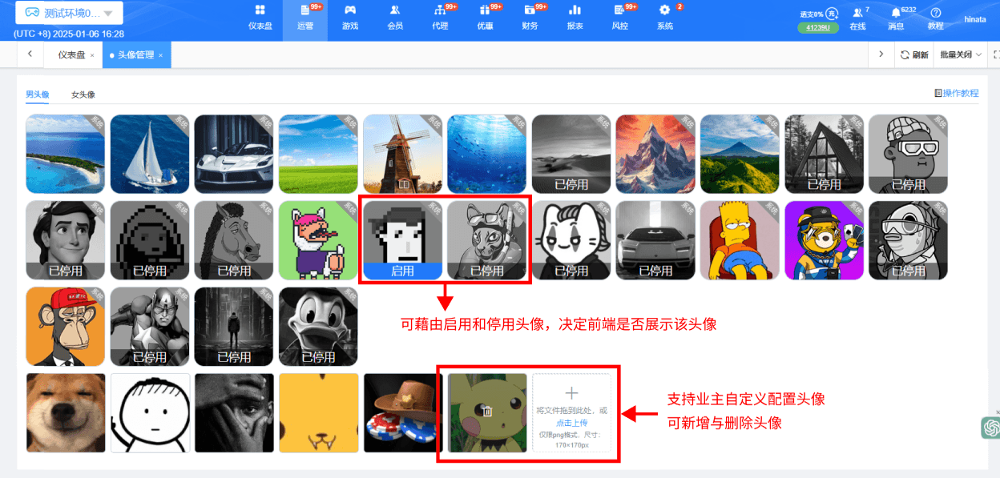

一、头像管理
1.功能说明：会员可在客户端设置个人资料时，从业主提供的头像中选择一个作为个人头像。系统支持停用默认头像，停用后该头像将不再展示于前端页面。
2.界面操作：
(1) 头像仅支持 PNG 格式（适配客户端展示），尺寸为170*170像素
(2) 若上传的图片不符合尺寸标准，系统会以图片中心为基准，自动裁剪或缩放至符合标准。

1.功能说明：会员可在客户端设置个人资料时，从业主提供的头像中选择一个作为个人头像。系统支持停用默认头像，停用后该头像将不再展示于前端页面。
2.界面操作：
(1) 头像仅支持 PNG 格式（适配客户端展示），尺寸为170*170像素
(2) 若上传的图片不符合尺寸标准，系统会以图片中心为基准，自动裁剪或缩放至符合标准。
